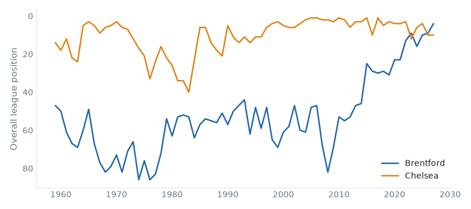
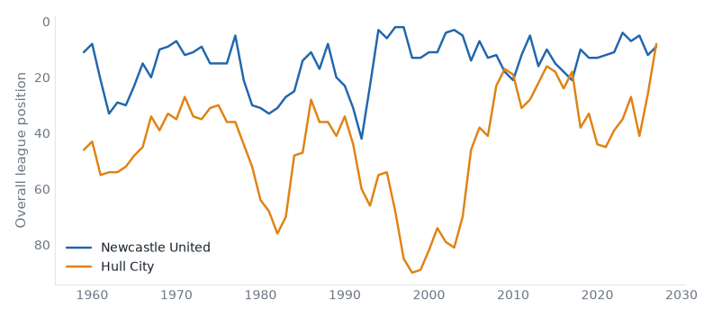

Premier League and Championship, 21 September to 27 September 2026. 22 results.Friday's preview.
Brentford 3–0 Chelsea
Premier League, Fri 18 Sep
Brentford have 9 points from 5 games, their best start since 2013/14.

Newcastle 2–1 Hull
Premier League, Sat 19 Sep
Newcastle United beat Hull City for the first time since 2014/15.

Tottenham 2–3 Aston Villa
Premier League, Sat 19 Sep
Tottenham Hotspur have 2 points from 5 games, their worst start since 2008/09.
Burnley 1–1 Derby
Championship, Sat 19 Sep
Burnley have 20 games without a win in a row, their longest run since 1979/80.
Cardiff 3–1 Charlton
Championship, Sat 19 Sep
Cardiff City beat Charlton Athletic for the first time since 2015/16.
Lincoln 1–2 Swansea
Championship, Sat 19 Sep
Swansea City beat Lincoln City for the first time since 2004/05.
Millwall 2–2 West Ham
Championship, Sat 19 Sep
West Ham United have 15 points from 8 games, their best start since 2011/12.
QPR 2–2 Preston
Championship, Sat 19 Sep
Preston North End have 4 points from 8 games, their worst start since 1961/62.
Wrexham 2–1 Southampton
Championship, Sat 19 Sep
Wrexham beat Southampton for the first time since 1959/60.
Fulham 1–1 Man United
Premier League, Sun 20 Sep
Manchester United have 5 points from 5 games, their worst start since 2014/15.
Man City 5–3 Sunderland
Premier League, Sun 20 Sep
Sunderland have 4 points from 5 games, their worst start since 2016/17.
Wolves 1–0 West Brom
Championship, Sun 20 Sep
Wolverhampton Wanderers beat West Bromwich Albion for the first time since 2010/11.
| Fri 18 late | Brentford | 3–0 | Chelsea | best start since 2013/14 | |
| Sat 19 late | Brighton | 3–0 | Arsenal | ||
| Sat 19 late | Everton | 1–0 | Ipswich | best start since 2021/22 | |
| Sat 19 late | Newcastle | 2–1 | Hull | first win v Hull City since 2014/15 | |
| Sat 19 late | Nott'm Forest | 0–1 | Coventry | first win v Nottingham Forest since 2021/22 | |
| Sat 19 late | Tottenham | 2–3 | Aston Villa | worst start since 2008/09 | |
| Sun 20 late | Bournemouth | 0–1 | Liverpool | ||
| Sun 20 late | Fulham | 1–1 | Man United | worst start since 2014/15 | |
| Sun 20 late | Leeds | 0–0 | Crystal Palace | best start since 2019/20 | |
| Sun 20 late | Man City | 5–3 | Sunderland | worst start since 2016/17 |
| P | W | D | L | GD | Pts | ||
|---|---|---|---|---|---|---|---|
| 1 | Liverpool | 3 | 2 | 1 | 0 | +3 | 7 |
| 2 | Manchester City | 2 | 2 | 0 | 0 | +4 | 6 |
| 3 | Arsenal | 3 | 2 | 0 | 1 | 0 | 6 |
| 4 | Leeds United | 2 | 1 | 1 | 0 | +1 | 4 |
| 5 | Nottingham Forest | 2 | 1 | 1 | 0 | +1 | 4 |
| 6 | Hull City | 3 | 1 | 1 | 1 | 0 | 4 |
| 7 | Crystal Palace | 3 | 1 | 1 | 1 | -1 | 4 |
| 8 | Aston Villa | 3 | 1 | 1 | 1 | -3 | 4 |
| 9 | Brighton & Hove Albion | 2 | 1 | 0 | 1 | +4 | 3 |
| 10 | Newcastle United | 2 | 1 | 0 | 1 | -1 | 3 |
| 11 | Chelsea | 3 | 1 | 0 | 2 | -3 | 3 |
| 12 | Coventry City | 3 | 1 | 0 | 2 | -3 | 3 |
| 13 | Ipswich Town | 3 | 1 | 0 | 2 | -3 | 3 |
| 14 | Brentford | 2 | 0 | 2 | 0 | 0 | 2 |
| 15 | Everton | 2 | 0 | 2 | 0 | 0 | 2 |
| 16 | Manchester United | 3 | 0 | 2 | 1 | -2 | 2 |
| 17 | Bournemouth | 2 | 0 | 1 | 1 | -1 | 1 |
| 18 | Fulham | 2 | 0 | 1 | 1 | -1 | 1 |
| 19 | Sunderland | 3 | 0 | 1 | 2 | -3 | 1 |
| 20 | Tottenham Hotspur | 2 | 0 | 1 | 1 | -3 | 1 |
| Fri 18 late | Bristol City | 1–0 | Watford | worst start since 2021/22 | |
| Sat 19 late | Birmingham | 2–2 | Middlesbrough | ||
| Sat 19 late | Burnley | 1–1 | Derby | 20 games without a win, longest since 1979/80 | |
| Sat 19 late | Cardiff | 3–1 | Charlton | first win v Charlton Athletic since 2015/16 | |
| Sat 19 late | Lincoln | 1–2 | Swansea | first win v Lincoln City since 2004/05 | |
| Sat 19 late | Millwall | 2–2 | West Ham | best start since 2011/12 | |
| Sat 19 late | Portsmouth | 2–2 | Blackburn | ||
| Sat 19 late | QPR | 2–2 | Preston | worst start since 1961/62 | |
| Sat 19 late | Stoke | 2–1 | Sheffield United | ||
| Sat 19 late | Wrexham | 2–1 | Southampton | first win v Southampton since 1959/60 | |
| Sun 20 late | Norwich | 3–4 | Bolton | first win v Norwich City since 2017/18 | |
| Sun 20 late | Wolves | 1–0 | West Brom | first win v West Bromwich Albion since 2010/11 |
| P | W | D | L | GD | Pts | ||
|---|---|---|---|---|---|---|---|
| 1 | Swansea City | 4 | 3 | 0 | 1 | +3 | 9 |
| 2 | Lincoln City | 4 | 3 | 0 | 1 | +2 | 9 |
| 3 | Queens Park Rangers | 4 | 2 | 2 | 0 | +3 | 8 |
| 4 | Birmingham City | 4 | 2 | 1 | 1 | +1 | 7 |
| 5 | Wolverhampton Wanderers | 4 | 2 | 1 | 1 | +1 | 7 |
| 6 | Bristol City | 4 | 2 | 1 | 1 | 0 | 7 |
| 7 | West Ham United | 4 | 1 | 3 | 0 | +1 | 6 |
| 8 | West Bromwich Albion | 4 | 2 | 0 | 2 | -1 | 6 |
| 9 | Middlesbrough | 4 | 1 | 2 | 1 | 0 | 5 |
| 10 | Sheffield United | 4 | 1 | 2 | 1 | 0 | 5 |
| 11 | Wrexham | 4 | 1 | 2 | 1 | -3 | 5 |
| 12 | Portsmouth | 3 | 1 | 1 | 1 | +1 | 4 |
| 13 | Derby County | 4 | 1 | 1 | 2 | -2 | 4 |
| 14 | Bolton Wanderers | 4 | 1 | 1 | 2 | -4 | 4 |
| 15 | Millwall | 4 | 1 | 1 | 2 | -4 | 4 |
| 16 | Stoke City | 4 | 1 | 1 | 2 | -4 | 4 |
| 17 | Charlton Athletic | 4 | 1 | 1 | 2 | -5 | 4 |
| 18 | Blackburn Rovers | 4 | 0 | 3 | 1 | -1 | 3 |
| 19 | Norwich City | 4 | 1 | 0 | 3 | -3 | 3 |
| 20 | Southampton | 4 | 0 | 2 | 2 | -2 | 2 |
| 21 | Preston North End | 4 | 0 | 1 | 3 | -3 | 1 |
| 22 | Cardiff City | 4 | 0 | 1 | 3 | -4 | 1 |
| 23 | Watford | 4 | 0 | 1 | 3 | -4 | 1 |
| 24 | Burnley | 4 | 0 | 1 | 3 | -7 | 1 |
Built from the English football database, tiers 1–5 from 1958/59. Results from football-data.co.uk. Archived copy.